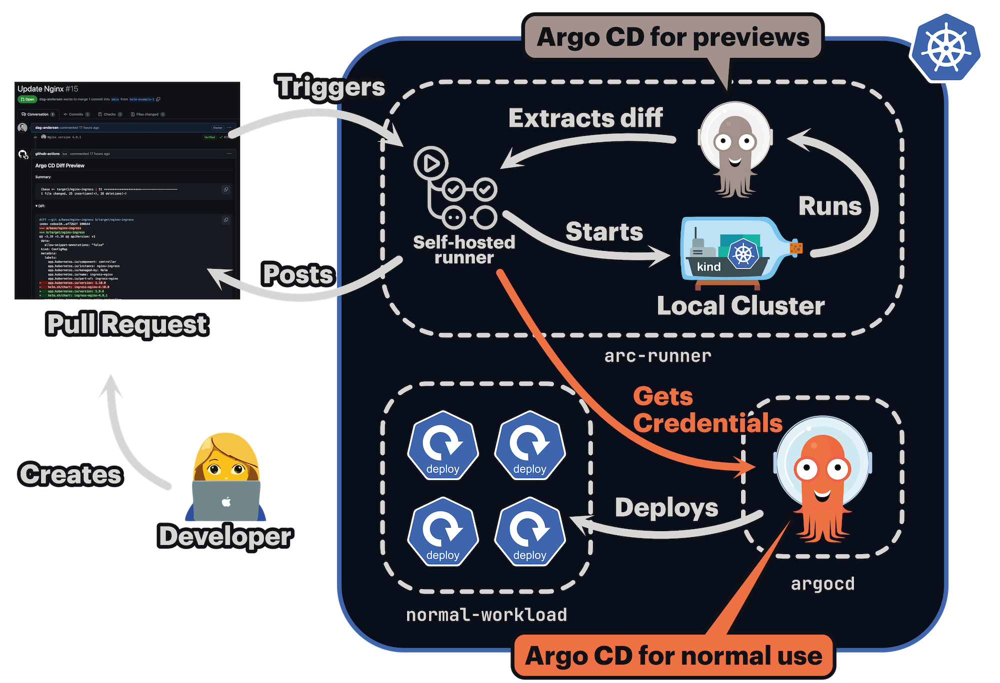

Self-Hosted GitHub Actions Runners on Kubernetes🔗
Running argocd-diff-preview with self-hosted GitHub Actions runners inside your Kubernetes cluster offers significant advantages over GitHub-hosted runners. Most notably, you can directly access Argo CD's cluster and GitHub/GitLab credentials from the host cluster, eliminating the need to store credentials in your CI/CD pipeline.
This guide covers two main approaches for using self-hosted runners with argocd-diff-preview.
Approach 1: Ephemeral Cluster inside Runner Pod🔗
This approach creates a temporary cluster for each diff preview run while reusing credentials from your existing Argo CD installation. It provides isolation for the diff preview while not storing the credentials in your CI/CD pipeline.

How It Works🔗
When your self-hosted runner pod runs inside the same cluster as Argo CD:
- The runner can access Argo CD secrets using
kubectl get secrets -n argocd - These secrets are extracted and cleaned of cluster-specific metadata
- The secrets are mounted into the
argocd-diff-previewcontainer - An ephemeral cluster is created with these credentials pre-configured
- The diff preview runs with full access to your Git repositories and Helm registries
Benefits🔗
- Secure credential access - No need to expose secrets to GitHub. The credentials are read directly from the host cluster and they are always in sync
- Isolated execution - Each run creates a fresh, ephemeral cluster. Never interacts with your "real" Argo CD instance.
- Easy cleanup - Ephemeral clusters are automatically removed.
Example Workflow🔗
This example is meant for inspiration. You can structure it in many different ways.
Approach 2: Connecting to a pre-configured Argo CD🔗
For enhanced security and performance, you can skip the ephemeral cluster creation entirely and use a pre-configured Argo CD instance directly. This approach is covered in detail in the Connecting the self-hosted runner to Argo CD on the host cluster guide.
Handling CIDR Collisions🔗
When using Action Runner Controller (ARC) to self-host your GitHub Actions runners, the ephemeral kind cluster created by argocd-diff-preview may have CIDR ranges that conflict with your host cluster's network configuration. These overlapping ranges can cause networking issues during the diff preview process.
Default CIDR Ranges🔗
The kind cluster uses these default CIDR ranges:
| Type | CIDR Range |
|---|---|
| Service | 10.96.0.0/16 |
| Pod | 10.244.0.0/16 |
If these ranges overlap with your host cluster's CIDRs, you'll need to configure custom ranges for the ephemeral cluster.
Configuring Custom CIDRs🔗
Step 1: Create a kind configuration file
Create a file in your repository (e.g., hack/kind.yaml) with non-overlapping CIDR ranges:
kind: Cluster
apiVersion: kind.x-k8s.io/v1alpha4
networking:
serviceSubnet: "10.80.0.0/16"
podSubnet: "10.128.0.0/16"
Step 2: Pass the configuration to argocd-diff-preview
Add the --kind-options flag to your workflow to use the custom configuration:
- name: Generate Diff
run: |
docker run \
--network=host \
-v /var/run/docker.sock:/var/run/docker.sock \
-v $(pwd)/main:/base-branch \
-v $(pwd)/pull-request:/target-branch \
-v $(pwd)/output:/output \
-e TARGET_BRANCH=refs/pull/${{ github.event.number }}/merge \
-e REPO=${{ github.repository }} \
dagandersen/argocd-diff-preview:v0.1.24 \
--kind-options '--config /base-branch/hack/kind.yaml'